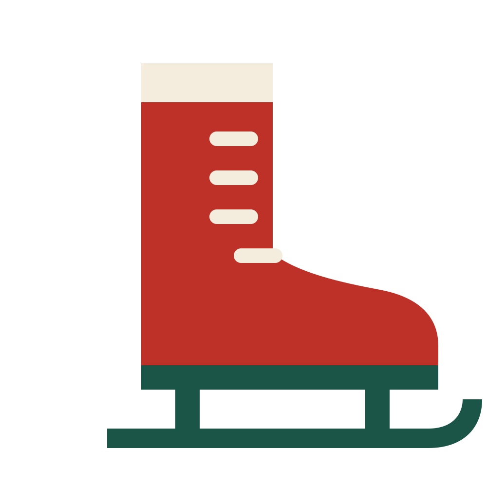

La pista di pattinaggio
dal 5 dicembre al 6 gennaio, in centro
Dove
[luogo]
Orari
[orari]
Ingresso
[prezzo]
Sabato 5 dicembre si pattina gratis per tutta la sera.
Post pista di pattinaggio 1080×1350 · l'arco azzurro con il pattino e le scie sul ghiaccio; sotto, il titolo, il periodo e i fatti in tre colonne (dove, orari, ingresso). Luogo, orari e prezzo sono segnaposto. PNG: post/pista-pattinaggio.png, si riesporta con #png.